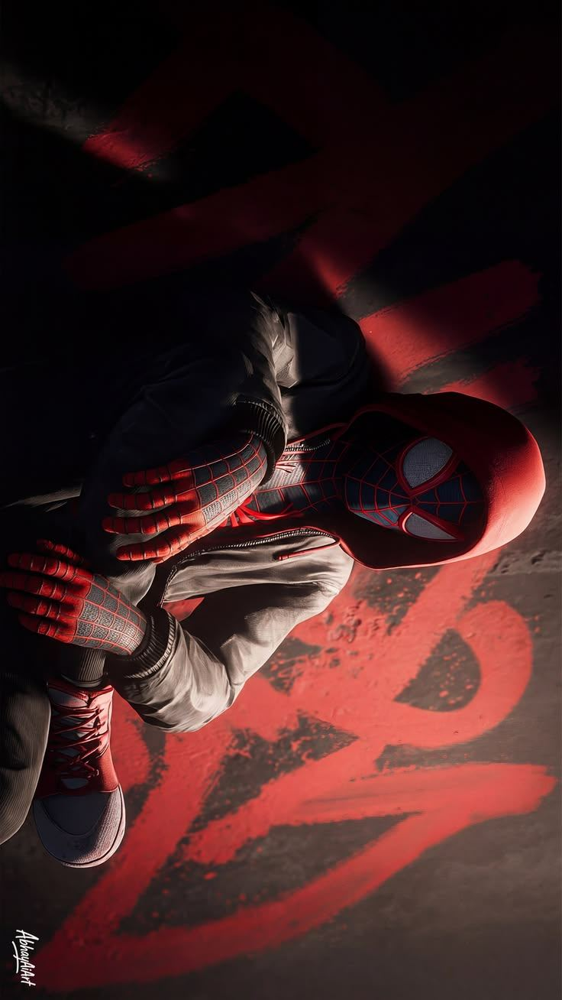
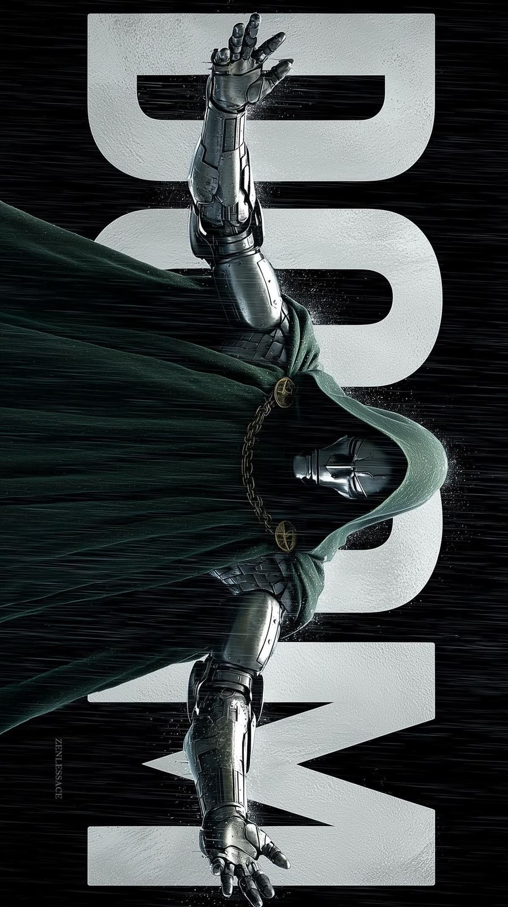
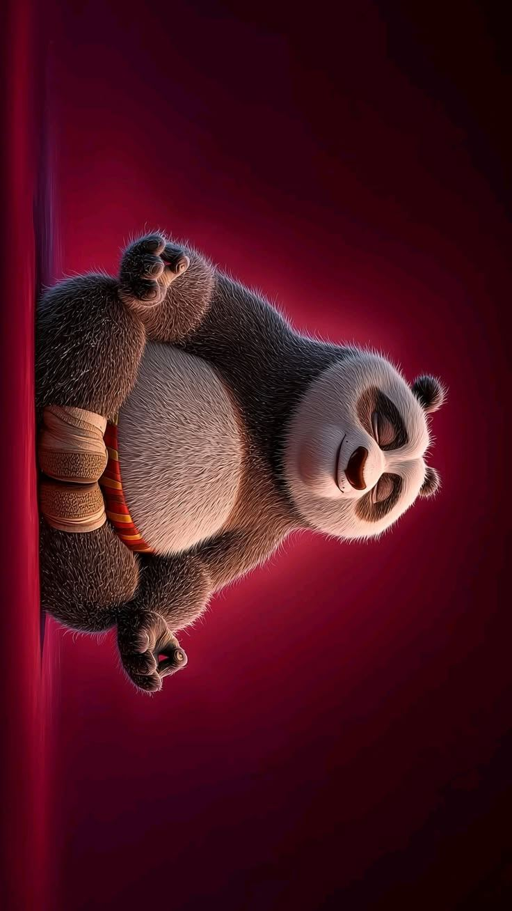

What's queued up next
From rooftop vigilantes to armored monarchs to a warrior wrapped in fur — here's what's on the slate next, and why it's worth the ticket.
01–03
Three releases, three tones, one night out. Scroll to move through the lineup.

01 · Street level
Brand New Day
In theaters nowPeter's been forgotten by the city he protects, and the isolation is starting to change him — right as something even he can't out-swing arrives.

02 · The throne
Avengers: Doomsday
Coming Dec 18, 2026Heroes from three different timelines collide, and the one thing they all agree on is that Doom got here first.

03 · The valley
Kung Fu Panda 4
Streaming nowPo has to track down and train his own successor — turns out that's harder than anything Oogway ever taught him.
A closer look at who's carrying the slate this season.
Four years on from the spell that erased him from everyone's memory, Peter's still swinging — just quieter, and mostly alone. This chapter leans into that isolation before it lets things get loud again.
Not a villain waiting to be stopped — a ruler waiting to be understood. Three universes' worth of heroes are about to learn that Doom doesn't do surprises. He does inevitabilities.
Same big heart, new job description: finding whoever comes next. This one is about legacy — training a successor without quite admitting he's ready to hand over the title.
The full run — every stub from the archive, previous and upcoming.
Previous, streaming, and upcoming — every trailer on the slate, in one place.
No titles match that search.
Everything this site is built from, and who it actually belongs to.
Every film title, character, and trailer referenced on this site is the property of its respective studio and rights holder — including Marvel Studios, The Walt Disney Company, Sony Pictures, DreamWorks Animation, and Pixar Animation Studios. Nothing here is official; this is a fan-built concept site, not a Marvel or studio product.
All trailers play through YouTube's own embedded player. Where a title's trailer comes from the studio's own official channel — including its regional/dubbing channel for the Hindi, Spanish, French, Mandarin, Arabic, and Japanese versions — that's who you're watching. For older catalog titles where the studio itself never uploaded the original trailer to YouTube, the site uses the best available preservation upload instead — these are marked "Archival upload" on the card, and credit for that footage belongs to whichever channel uploaded it, visible directly in the YouTube player itself once you press play. The language switch only ever shows a title in a language once an official dub trailer for it has actually been verified on YouTube — if a title has no dub in a given language yet (or none currently exists), it's left out of that language's list rather than guessed at. Trailer thumbnail images are pulled from YouTube's public thumbnail service for the linked video. No trailer video is hosted or redistributed by this site.
The Spider-Man, Doom, and panda artwork used across the hero, slate, and spotlight sections was supplied by the site owner. Original artist credit, where visible in the source image, remains with the artist.
Built with GSAP & ScrollTrigger (GreenSock) for animation, Google Fonts (Bebas Neue, Archivo) for type, and EmailJS for the alerts form. All used under their respective open licenses.